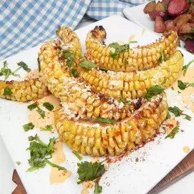

Air Fryer Corn Ribs

This is a fun take on air-fried elote ribs. Cutting the
this way cuases them to curl up in the shape of ribs once cooked
This also makes the corn a lot easier to handle and eat, not to mention
a lot less messy too.
Ingredients
- Fresh Corn
- Olive Oil
- Chilli Powder
- Garlic Powder
- Black Pepper
- Lime Juice
- Cheese
- Cilantro
Steps
- Preheat the oven to 400 degrees F (200 degrees C).
- Place an ear of corn on a cutting board and cut in half lengthwise. Cut
each half in half lengthwise. Repeat with remaining ear of corn. You should have 8 "ribs" total.
- Whisk olive oil, chili powder, garlic powder, and black pepper together in
a bowl until smooth. Brush onto both sides of each rib and place in the air fryer basket.
- Air fry for 12 minutes, flipping halfway through the cook time.
- Meanwhile whisk mayonnaise, lime juice, and hot sauce together until thoroughly combined.
- Transfer corn ribs to a serving plate. Drizzle sauce over the
ribs and top with cotija cheese and cilantro.